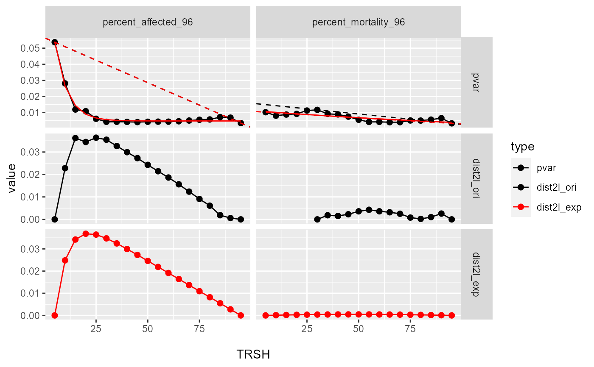

estimate_dataset_bmr.RdCurrently two methods have been implemented to get the "keen-point" from the variance(y) - threshold(x) curve. One is to use the original y values to draw a straight line between the lowest x value (p1) to highest x value (p2). The knee-point is the x that has the longest distance to the line. The other one is to fit the data first then use the fitted responses to do the same analysis. Currently the first method is preferred.
estimate_dataset_bmr(d, p1 = NULL, p2 = NULL, plot = TRUE)
| d | The rcurvep object with multiple samples and TRSHs. See |
|---|---|
| p1 | Default = NULL, or an integer value to manually set the first index of line. |
| p2 | Default = NULL, or an integer value to manually set the last index of line. |
| plot | Default = TRUE, plot the diagnostic plot. |
A list with two components: stats and outcome.
stats: a tibble, including pooled variance (pvar), fitted responses (y_exp_fit, y_lm_fit), distance to the line (dist2l)
outcome: a tibble, including estimated BMRs (bmr)
Suffix in the stats and outcome tibble: ori (original values), exp(exponential fit). prefix in the outcome tibble: cor (correlation between the fitted responses and the original responses), bmr (benchmark response), qc (quality control).
The estimated BMR can be used in the calculation of POD.
For example, if bmr = 25.
For Curvep, combi_run_rcurvep(zfishbeh, TRSH = 25).
For Hill fit, summarize_fit_output(run_fit(zfishbeh, modls = "hill"), thr_resp = 25, extract_only = TRUE).
# no extra cleaning data(zfishdev_act) bmr_out <- estimate_dataset_bmr(zfishdev_act, plot = FALSE) plot(bmr_out)#> $`1`#> Warning: Removed 5 rows containing missing values (geom_point).#> Warning: Removed 76 row(s) containing missing values (geom_path).#># if want to do extra cleaning... actm <- summarize_rcurvep_output(zfishdev_act, clean_only = TRUE, inactivate = "CARRY_OVER") bmr_out <- estimate_dataset_bmr(actm, plot = FALSE)